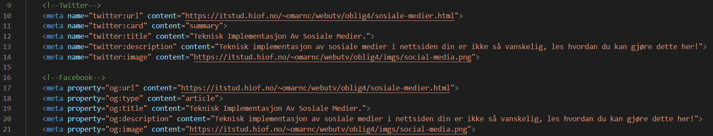

Sosiale Medier
05.11.2020

Sosiale medier er en dominerende trafikkilde for mange nettsider, derfor er det viktig å være ekstra nøye med hvordan nettstedet ditt vises når noen deler et innlegg på facebook eller tweeter.
Du kan enkelt tilpasse utseendet ved hjelp av metakoder (som du setter dem inn i head taggen) slik:
Jeg har implementert sosiale medier meta kodene på denne siden og på hjemme siden.